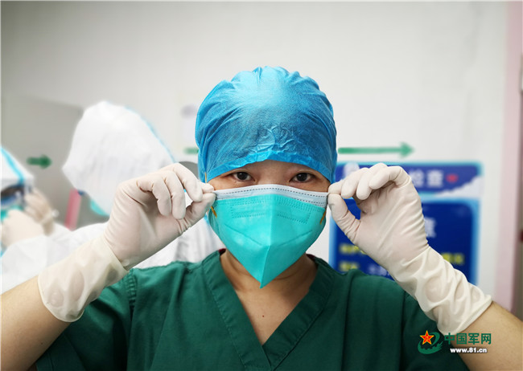
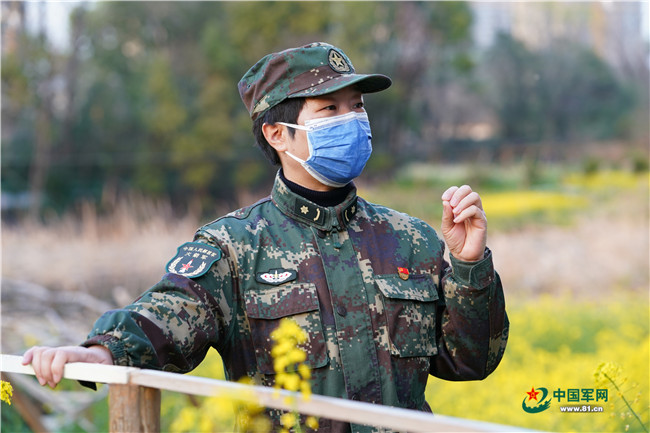
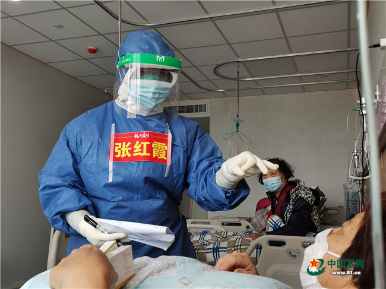

一线抗疫群英谱｜张红霞：抗疫一线的巾帼“0号手”
来源：中国军网 作者：李永飞 许 溟 赵法胜 责任编辑：张思远 2020-04-01 11:31
身姿挺拔、清爽干练，还未开口，笑容便写在脸上，浑身透着优雅。可一说话，快言快语一句紧接一句，做起事来更是干净利落。眼前的湖北省妇幼保健院光谷院区感染十四科副主任医师张红霞，是一位生死战场久经考验的老兵。
担任火箭军某医院急诊科主任7年，她熟练掌握心脑血管病变、严重消化道出血、重症胰腺炎等10多种急重症诊治本领，上百次带着患者走出鬼门关……
因为张红霞精通医术“一专多能”，应战沉着冷静，善带团队乐于攻关，像极了导弹发射的“0号手”指挥长，官兵把这位干练不拖沓、倔强不服输的急诊科主任称作巾帼“0号手”。
出征武汉，张红霞担任医疗组长，战“疫”一线与死神博弈，收治率和出院率稳居全科第一，大家都说，这个“0号手”，真是不一般！

激情如火
没见到张红霞时，就听了她的不少故事。在战友七嘴八舌的讲述中，护师曹娟娟的话让笔者印象最深：“她什么时候都激情满格，血液像烈酒一样，一点就着。”
接到驰援湖北的通知，一直处于“备战”状态的张红霞，第一时间向组织请战：“此役凶险，如果急诊科有一个人去，那就是我！”
第一批收治患者入院，张红霞负责拟制计划，她把首例患者收到自己名下：“救治新冠患者尚有很多未知，风险大，我先来！”

这股闯劲拼劲，并非只发生在战“疫”一线，张红霞的军旅岁月留下无数这样的记忆。
2010年4月，青海玉树发生地震，张红霞凌晨3点接到电话：“组织医疗队去玉树，你能去吗？”此时丈夫出差在外，望着身边酣睡的儿子，她犹豫了一下：“没问题！”她连夜把孩子托管给同事，天不亮就随队出发了。张红霞上车时才发现，自己是医疗队唯一的女医生。
一天上午，海拔4800多米的村庄打来求救电话：“一位80多岁的藏族老人伤势严重，急需救治。”张红霞二话不说，拔腿就往那儿赶。为老人处置完伤口，又和同事对全村进行了巡诊，摸着夜色才返回营地。劳累了一整天，刚躺下就赶紧吸氧补充体力，第二天她又元气满满地出现在救灾一线。
时隔不久，甘肃舟曲发生特大泥石流灾害，张红霞再次主动请缨：“我有经验，让我去！”
敬业如痴
感染十四科，患者收治率在光谷院区排名第一；张红霞带领的医疗组，收治率在感染十四科位居榜首。
自打到了武汉，张红霞几乎天天铆在医院，“晨曦出发、戴月而归”成为常态。张红霞也觉得累，但她说：“既然不舍千里而来，就得对得起生命里的每一分钟。”

当初，在消化科当医生的她，临危受命担任急诊科主任，“跨科”困难重重，几乎需要“重头再来”。
千钧重担加身，一宿辗转未眠。面对困难，不在沉默中爆发，就在沉默中灭亡，张红霞选择了前者。半年时间，她瘦了20多斤，啃下一块块“硬骨头”，科室当年步入先进行列。7年过去，张红霞中医西医并重，内科外科兼通，气管插管、心肺复苏、深静脉置管、脑外伤处理等“十八般武艺”皆能操作，成为急诊急救一线的“全能号手”。2017年，她荣膺全国首届“白求恩式好医生”提名奖。
有一次，急诊科来了一位病人，捂着肚子喊痛，可心电图、CT等检查一切正常。张红霞猛然想起曾遇到的“主动脉夹层”病例，惊出一身冷汗。她赶紧为患者做“血管造影”CT增强检查，果然不出所料。由于诊断精准、救治及时，患者最终化险为夷。至今回想起来，张红霞仍心有余悸：“这种病处置不当，分分钟要人命。”
如此惊险的情况，也在“红区”上演。一位80多岁的高龄患者，入院检查病症并不重，可精神萎靡不振。张红霞对比入院前各项指标发现，存在从普通型向危重型发展的“细胞因子风暴”，她密切关注患者各种细微变化。果然，患者突然出现血钾剧减、血氧饱和度急速下降、意识不清等症状，张红霞胸有成竹采取一系列急救手段，从生死线上救回一命。
温暖如春
张红霞爱笑，这是她的招牌表情，更是她的阳光心态。
救治展开后，不少患者成天愁眉苦脸、唉声叹气。张红霞心里嘀咕：“这可不行，消极情绪会传染，既要治顽疾，更要医心病。”
进了病房，她一边忙着工作，一边变着法开导大家，今天在防护服上画个漫画，明天聊聊外面的稀奇事，逗得大伙儿直乐呵，患者的孤寂和恐惧情绪在谈笑间“灰飞烟灭”。

一位姓雷的女士，第一次见面就拽住她：“我是不是不行了，银行密码都告诉老公了，遗书也写好了……”张红霞一查病史，这位患者有焦虑型抑郁症，白天不爱与人交流，夜里整宿睡不着觉
。
张红霞虽然考取了心理咨询师证书，可面对雷女士的病情还是没啥把握，她专门请几名心理专家进行远程会诊，量身定制治疗方案。那段时间，只要有空她就找雷女士聊天，分散其注意力，缓解其焦躁情绪。
可没过几天，又遇到新难题：雷女士每天必服的治疗抑郁症的药没了。这种特殊药品，光谷院区没有，外面也买不到
。
情急之下，张红霞想到通过“朋友圈”求助。四处托人，几经周折，终于联系上专科医院，又让患者家人把相关资料发到医院进行核实验证，一切处理妥当已是凌晨2点多。第二天一早，张红霞带着药品来到病房，雷女士眼圈一红，吧嗒吧嗒直掉眼泪。
十几天后，雷女士满脸微笑病愈出院，张红霞成为她热线联系的“微信好友”。在雷女士看来：“有她在，不孤单”。
奋战光谷一个多月，这样的故事每天都在发生，张红霞的“热心肠”让患者如沐春风倍感温暖，很多人出院时拉着她舍不得离开。一位患者出院前夜琢磨半宿，送给张红霞8个字：红霞映日，便是春天。